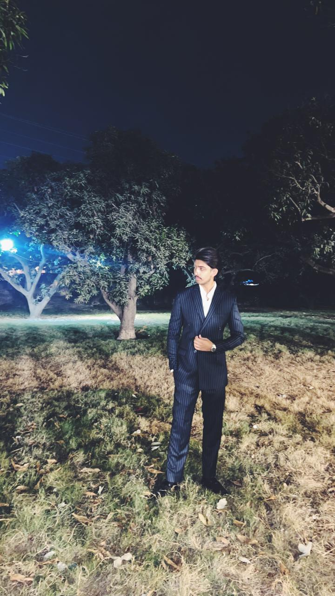

COMSATS University Islamabad, Lahore Campus
Bachelor of Science in Computer Science
Relevant Coursework: Computer Networks, DSA, OOP, Python, Web Development, Fundamentals of Programming, Software Engineering, Database Systems

Bachelor of Science in Computer Science
Relevant Coursework: Computer Networks, DSA, OOP, Python, Web Development, Fundamentals of Programming, Software Engineering, Database Systems
F.Sc. Pre-Medical
An interactive city traffic simulation in Java, utilizing data structures (Stacks, Queues, Linked Lists, Graphs, Trees) to model complex road networks and intersections. Designed a custom GUI to visually demonstrate algorithmic execution.
A real-time GUI chat application connecting multiple PCs over a network using Java Sockets and multithreading. Utilized OOP principles alongside File Handling to store chat history.
Basic interactive calculator website built using standard web technologies.
2D Arcade game built using C++ and the Raylib library for rendering and animation.
Architected a highly normalized SQL database ("Pro-League Nexus") to manage esports players, teams, tournaments, and corporate sponsors.